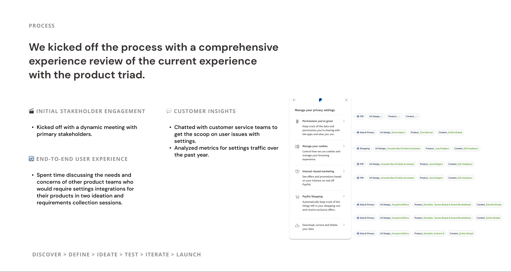
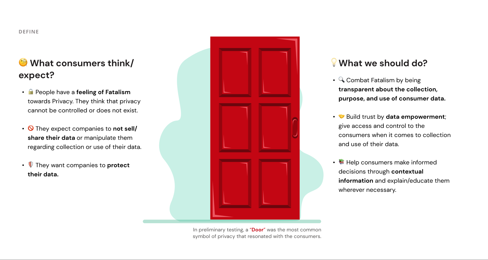
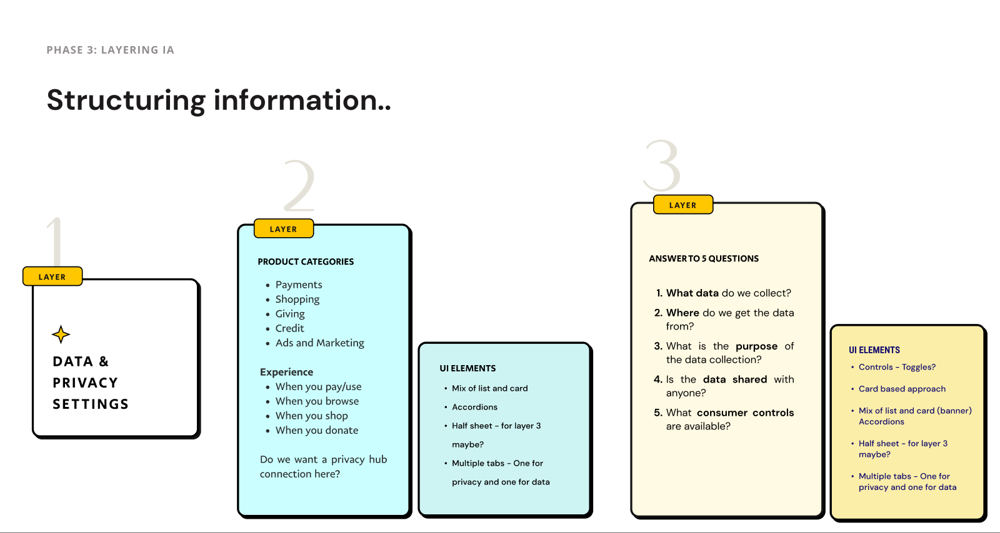
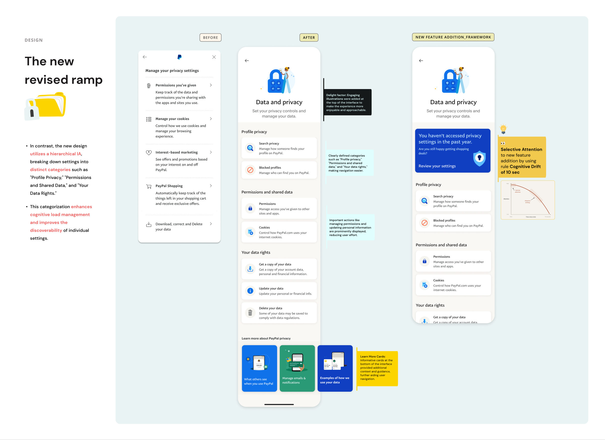
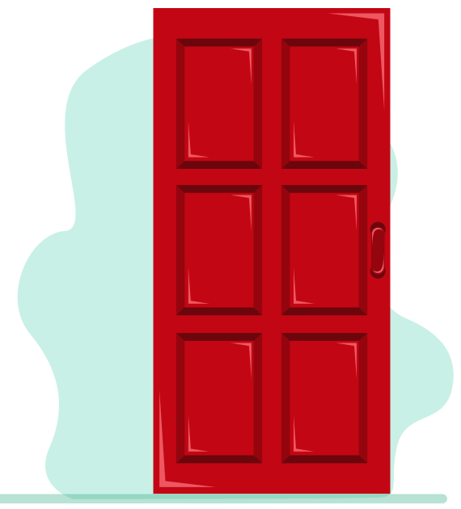
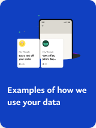

Experiment · PayPal Privacy · three new sections · 2026-11-26
Illustrations, the Learn more cards, and my process
Three new sections for the Privacy case, shown the way they'd look on the page: the illustrations and what they mean, how the Learn more cards are put together, and the design process as pencil sketches. Everything here comes from your Figma boards or the case. Anything I couldn't find is marked [X].

Process · experience review with the product triad

Define · fatalism, and the door

Phase 3 · layering the IA

The new revised ramp · delight, Learn more
03Process
My design process
Two designers, me and one other, working with product, engineering and a content designer. We tested designs every two weeks.
- 1Discover
We went through support calls and a year of settings traffic, and held two sessions with partner teams.
- 2Define
People felt privacy was out of their control.
- 3Ideate
Three layers: the hub, a product category, then answers to five questions.
- 4Test
I ran four card sorts, 30 people each: 24 of 30 put emails under Communications. The best prototype hit 74% against a 70% bar.
- 5Iterate
The layers folded into one page, in three groups.
- 6The yearly check
Once a year, a card asks if your settings still suit you.
Average rating from 150 users.
Better on some tasks once the sub nav was white, with bigger type.
04Illustrations
What the illustrations mean
Our early research kept landing on the same feeling: privacy is already gone, and there's nothing you can do about it. So I drew illustrations that show the opposite: you're the one in charge of your data.

Where it started
In early testing, the symbol people tied to privacy most was a door.
Privacy felt out of their control. They expected PayPal not to sell or share their data, and to keep it safe.
Show a person doing something, not a locked vault. Something you can open and close yourself.
The keeper
- Means
- A person next to the lock, holding her phone. The idea is that she controls the lock, not PayPal.
- Where
- Top of Data and privacy.
The folder
- Means
- Your data as a file. You can ask for a copy, fix it, or delete it.
- Where
- Your data rights; the case boards.
The keyhole shield
- Means
- A check-in on your settings once a year. I wanted it to feel like an anniversary, not a warning.
- Where
- The yearly check card.
The device and one detail
- Means
- A phone plus one detail that tells you what the card is about, like a profile and $30 for what other people can see.
- Where
- The Learn more cards.
Colours from the art
I drew all four: the keeper, the folder, the shield and the card art.
Why we moved the art
To make the page feel friendlier. My board calls it the "delight factor".
75% of visits never went past this page, and the first setting started halfway down the screen.
The art on the Learn more cards at the bottom, where it doesn't push anything down.
06Learn more about PayPal privacy
How the Learn more cards work
They're for people who want to know what happens to their data, so they sit last, after every setting. Our first idea put this a layer deeper, and rapid research flagged the extra click.
One colour per topic.
A phone and one detail. No faces.
A crossed-out eye: some info is hidden.
The question, two lines max.
The whole card opens it.
- Answers
- Is my data shared with anyone?
- Answers
- What can I control?

- Answers
- What is my data used for?
Which card answers which question is my guess. Please check.
Nothing hidden, nothing said twice. The 24 of 30 and the anniversary each appear once; the door story now lives only in Illustrations, told as A tells it. There's one sketch-to-screen moment, at the start of "Why we moved the art"; the other pairs are gone. Dropped: the palette, the "Opens" rows, the placement sketch and the 60% (already the case's headline number).
04Illustrations
What the illustrations mean
Our early research kept landing on the same feeling: privacy is already gone, and there's nothing you can do about it. So I drew illustrations that show the opposite: you're the one in charge of your data.
Where it started
In early testing, the symbol people tied to privacy most was a door.
Privacy felt out of their control. They expected PayPal not to sell or share their data, and to keep it safe.
Show a person doing something, not a locked vault. Something you can open and close yourself.
The keeper
- Means
- A person next to the lock, holding her phone. The idea is that she controls the lock, not PayPal.
- Where
- Top of Data and privacy.
The folder
- Means
- Your data as a file. You can ask for a copy, fix it, or delete it.
- Where
- Your data rights; the case boards.
The keyhole shield
- Means
- A check-in on your settings once a year. I wanted it to feel like an anniversary, not a warning.
- Where
- The yearly check card.
The device and one detail
- Means
- A phone plus one detail that tells you what the card is about, like a profile and $30 for what other people can see.
- Where
- The Learn more cards.
Colours from the art
Taken from the screens. Did you draw these, or were they from PayPal's illustration library with your direction? [X]
Why we moved the art
To make the page feel friendlier. My board calls it the "delight factor".
75% of visits never went past this page, and the first setting started halfway down the screen.
The art on the Learn more cards at the bottom, where it doesn't push anything down.
Picture first, two short lines each. The door goes first because it came from research. The last part shows the trade-off: you liked the art but still moved it, and that's the part a hiring manager will notice.
06Learn more about PayPal privacy
How the Learn more cards work
The settings are for changing things. The cards are for people who want to understand what happens to their data. They sit at the end so they don't push the settings down.
One colour per topic, from PayPal's palette, so you can tell the three apart quickly.
A phone and one small detail that hints at the topic. No faces, since the page behind it does the explaining.
Here it's a crossed-out eye, meaning some of your info is hidden.
The question in plain words, two lines max.
You can tap anywhere on the card. There's no separate "Read" link.
Each card answers one of the five questions
- Card
- What others see when you use PayPal
- Answers
- 4 · Is the data shared with anyone?
- Opens
- [X]
- Card
- Manage emails & notifications
- Answers
- 5 · What controls are available? (in the card sort, 24 of 30 people filed marketing emails under Communications, not Privacy)
- Opens
- [X]
- Card
- Examples of how we use your data
- Answers
- 3 · What is the data collected for?
- Opens
- [X]
The five questions are layer 3 from your "Layering IA" board. I guessed which card goes with which question, so please check.
Where they sit
After all the settings, so you never have to scroll past them to change something.
Three cards in a row that scrolls sideways if more are added.
Our first idea put the answers one level deeper. Rapid research flagged the extra click as the main thing that didn't work.
One big card with five numbered notes, then a row per card. A recruiter can see it's a system just from the numbers, and a design lead can read the notes. The "Opens" lines still need your words.
03Process
My design process
Two designers, me and one other, working with product, engineering and a content designer. We tested designs every two weeks.
01Discover
Reviewed the old experience with product and engineering. We looked at customer service calls, a year of settings traffic, and held two sessions with teams who'd connect to settings.
02Define
People felt their privacy was already gone. In early testing, a door was the symbol they tied to it most.
03Ideate
Split it into three layers: the hub, a product category, then answers to five questions about your data.
04Test
I ran four closed card sorts with 30 people each. 24 of 30 put marketing emails under Communications, and only 6 of 30 looked for ad settings under Privacy. In the prototype tests, only one of three versions cleared the 70% success bar (74%).
05Iterate
Combined the layers into one page with three groups: profile, permissions, and your data rights.
06The yearly check
Made it feel like an anniversary. Once a year, a card asks if your deals setting still works for you.
What came out of it
Average rating for the new Data and Privacy settings, from 150 users' feedback.
Better on some tasks in unmoderated tests, after I made the sub nav white with bigger type and a clearer current-page marker.
Fewer support calls about privacy settings.
Six sketches, one line each. You can get through it in about ten seconds, and the captions have the facts. Pencil for ideas, blue pen where a decision got made (the door circled, the layers crossed out).
About the sketches. I drew these for the mock from what's on your boards. They're not copied from anywhere. If you have real notebook pages or whiteboard photos from the project, use those instead, since a hiring manager might ask to see the originals.